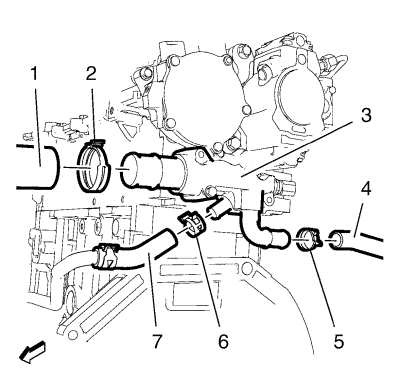
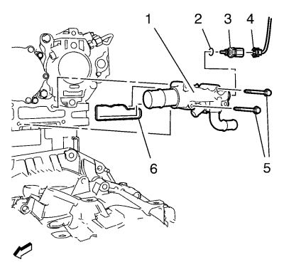

Retire el tubo flexible delantero de salida del refrigerador de aire de carga del soporte del tubo flexible delantero de salida del refrigerador de aire de carga. Retire el tubo flexible delantero de salida del refrigerador de aire de carga del tubo flexible trasero de salida del refrigerador de aire de carga y cuélguelo a un lado. Consultar Sustitución del tubo flexible de salida del intercooler .
Suelte los 2 clips de retención del mazo de cables del motor del soporte del mazo de cables del motor.
Retire los 2 tornillos del adaptador de la salida de agua del motor y del soporte del mazo de cables del motor (2) del adaptador de la salida de agua del motor.
Retire el soporte del mazo de cables del motor (1) del adaptador de la salida de agua del motor.

Retire el tubo flexible de entrada del radiador (1) y la abrazadera del tubo flexible de entrada del radiador (2) del adaptador de la salida de agua del motor (3).
Retire el tubo flexible de entrada del calefactor (4) y la abrazadera del tubo flexible de entrada del calefactor (5) del adaptador de la salida de agua del motor (3).
Retire el tubo flexible de derivación del termostato (7) y la abrazadera del tubo flexible de derivación del termostato (6) del adaptador de la salida de agua del motor (3).

Desemborne el enchufe del mazo de cables del sensor de temperatura del refrigerante del motor (4) del sensor de temperatura del refrigerante del motor (3).
Retire los 2 tornillos del adaptador de la salida de agua del motor (5).
Retire el adaptador de la salida de agua del motor (1) y la junta del adaptador de la salida de agua del motor (6) del motor.
Retire el sensor de temperatura del refrigerante del motor (3) y el anillo de junta del sensor de temperatura del refrigerante del motor (2) del adaptador de la salida de agua del motor (1).
Monte previamente el sensor de temperatura del refrigerante del motor (3) con un NUEVO anillo de junta de sensor de temperatura del refrigerante del motor (2) en el adaptador de la salida del agua del motor (1) y apriete el sensor a 13 N·m (115 lib. pulg.).
Monte el adaptador de la salida de agua del motor (1) con una junta de adaptador de la salida de agua del motor NUEVA (6) en el motor.
Monte los 2 tornillos del adaptador de la salida de agua del motor (5) y en el adaptador de agua del motor (1) y apriételos a 10 N·m (89 lib. pulg.).
Emborne el enchufe del mazo de cables del sensor de temperatura del refrigerante del motor (4) al sensor de temperatura del refrigerante del motor (3).
Monte el tubo flexible de derivación del termostato (7) y la abrazadera del tubo flexible de derivación del termostato (6) en el adaptador de la salida de agua del motor (3).
Monte el tubo flexible de entrada del calefactor (4) y la abrazadera del tubo flexible de entrada del calefactor (5) en el adaptador de la salida de agua del motor (3).
Monte el tubo flexible de entrada del radiador (1) y la abrazadera del tubo flexible de entrada del radiador (2) en el adaptador de la salida de agua del motor (3).
Monte el soporte del mazo de cables del motor (1) en el adaptador de la salida de agua del motor.
Monte los 2 tornillos del adaptador de la salida de agua del motor y del soporte del mazo de cables del motor (2) en el adaptador de la salida de agua del motor y apriételos a 10 N·m (89 lib. pulg.).
Fije los 2 clips de retención del mazo de cables del motor al soporte del mazo de cables del motor.
Monte el tubo flexible delantero de salida del refrigerador de aire de carga en el soporte del tubo flexible delantero de salida del refrigerador de aire de carga. Monte el tubo flexible delantero de salida del refrigerador de aire de carga en el tubo flexible trasero de salida del refrigerador de aire de carga. Consultar Sustitución del tubo flexible de salida del intercooler .